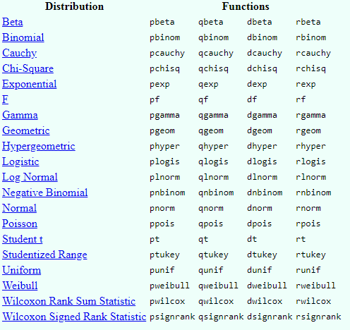
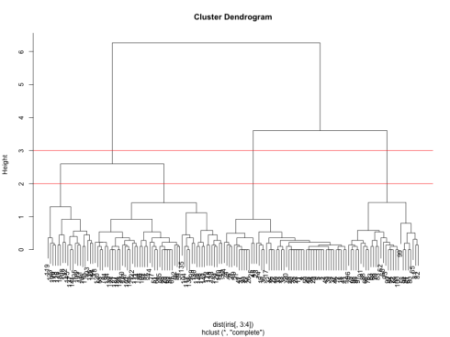

Introducción a la Ciencia de Datos
Sesión 4 - Parte I - Modelamiento de datos
Ismael Gómez Schmidt @ismaelgomezs
Data Scientist
Contenido de Sesión 4 - Parte I

Tipos de problemas y métodos principales aplicados
Ejemplos de Regresión lineal y Árbol de Decisión (rpart2) en R
Nociones de Clustering y Reglas de Asociación
Conceptos generales y consideraciones
Modelamiento de datos
Modelamiento de datos
¿Qué voy a modelar?
¿Cuál es el
problemao lanecesidad? ¿Cuál es lapregunta?Hay dos grandes tipos de problemas dependiendo de si tengo o no ejemplos etiquetados de mi respuesta o salida: 1)
Aprendizaje Supervisadoy 2)Aprendizaje No SupervisadoDentro del supervisado tenemos métodos del tipo Regresión y Clasificador, mientras que para el no supervisado se tiene los métodos de Clustering y Reglas de Asociación

¿Qué modelo usar?
Ningún modelo es mejor que otro apriori. Dependerá del problema y del dataset disponible
Siempre hay un trade off entre Precisión e Interpretabilidad
Elegir el modelo puede ser una de las tareas más desafiantes en la práctica
No está mal tener como punto de partida el clásico modelo de regresión lineal simple
Probabilidades y Distribuciones
Nos saltaremos la revisión de Probabilidades en virtud del tiempo
Estudiar probabilidades desde la perspectiva
FrecuentistayBayesianaTener en cuenta estas funciones en R:
 Estudiar Estadística Inferencial
Regresión lineal simple
Busca estimar los coeficientes beta0 y beta1 de la siguiente expresión:

ecorresponde al error íntrinseco al problema que no puede ser explicado por el modelo.Lo hace minimizando el error cuadrático de los residuales (RSS) mediante el
método de los mínimos cuadrados. La diferencia entre el modelo y el valor real se denominadaresidual
Regresión lineal simple en R
dataRV <- read.csv('ruido_viento_ok.csv', stringsAsFactors=F)
fit1 <- lm(Leq_RF ~ as.numeric(Viento), dataRV) # Para ajustar un modelo de regresión lineal
fit1$coefficients
## (Intercept) as.numeric(Viento)
## 40.26626 2.38093
library(ggplot2)
ggplot(data=dataRV, aes(x=Viento, y=Leq_RF)) + geom_point() + theme_bw() +
geom_smooth(method=lm, se=T) + xlab( 'Viento [m/s]' ) + ylab('Ruido [Leq dBA]')
summary(fit1)
##
## Call:
## lm(formula = Leq_RF ~ as.numeric(Viento), data = dataRV)
##
## Residuals:
## Min 1Q Median 3Q Max
## -10.9805 -3.9662 0.1076 3.7314 14.1766
##
## Coefficients:
## Estimate Std. Error t value Pr(>|t|)
## (Intercept) 40.266 1.645 24.483 < 2e-16 ***
## as.numeric(Viento) 2.381 0.545 4.369 2.7e-05 ***
## ---
## Signif. codes: 0 '***' 0.001 '**' 0.01 '*' 0.05 '.' 0.1 ' ' 1
##
## Residual standard error: 5.548 on 118 degrees of freedom
## Multiple R-squared: 0.1392, Adjusted R-squared: 0.1319
## F-statistic: 19.09 on 1 and 118 DF, p-value: 2.7e-05
p-value
- Sgnificancia estadística de los coeficientes estimados


R2
- ¿Qué proporción de variabilidad total es explicada por el modelo?: "¿qué tan bueno es el modelo?"


Ejemplo con otro dataset
#install.packages('MASS')
library(MASS)
#names(Boston)
# ?Boston
fit2 <- lm(medv ~ lstat, Boston)
coef(fit2)
## (Intercept) lstat
## 34.5538409 -0.9500494
confint(fit2)
## 2.5 % 97.5 %
## (Intercept) 33.448457 35.6592247
## lstat -1.026148 -0.8739505
Predicción
plot(Boston$lstat, Boston$medv); abline(fit2, col='red', lwd=3)
abline(confint(fit2)[1, 1], confint(fit2)[2, 1], col='blue', lwd=2)
abline(confint(fit2)[1, 2], confint(fit2)[2, 2], col='blue', lwd=2)
p <- predict(fit2, newdata=data.frame(lstat=20), interval="prediction")
points(20, p[1], col='darkgreen', lwd=6); points(20, p[2], col='darkgreen', lwd=6)
points(20, p[3], col='darkgreen', lwd=6)

Regresión lineal multivariable

fit3 <- lm(medv ~ lstat + age, Boston)
# summary(fit3)
fit4 <- lm(medv ~ ., Boston)
# summary(fit4)
- Ejemplo 21: Graficar las dos rectas definidas por los coeficientes del modelo fit3 (como el gráfico anterior pero con la nueva información que aporta la variable Age)
Consideraciones
F statistics
Función
vif()de libreríacarpara análisis de variance inflation (colinealidad entre variables)Función
stepAIC()de libreríaMASSpara variable selectorVer el efecto sinergia (interacción) entre predictores
Tener en cuenta que se asume: linealidad, error con distribución gaussiana y estimadores no sesgados.
R2 siempre crece al aumentar predictores
Outliers, Leverage, Heteroestadicity.
Conceptos generales de Clasificación
Conceptos generales de Clasificación
Particionamiento: Training, Validation & Testing datasets.

Overfitting
Cross validation.

Confusion Matrix (Accuracy, Recall, F Measure)

Curva ROC
Esquema general

Árbol de decisión (clasificación)

Árbol de decisión (clasificación)
Separación de variables en grupos mediante un proceso iterativo
Evalúa la "homogeneidad" dentro de cada grupo
Ventajas: Fácil de interpretar + Buena performance para problemas no lineales
Desventajas: Puede generar overfitting al no aplicar técnicas como cross validation + Resultados "variables"
Algoritmo básico
Empieza con todas las variables en un solo grupo
Encuentra la variable que mejor separa las respuestas o salidas
Separa los datos en dos grupos en el nodo
Dentro de cada grupo vuelve a buscar la mejor vairable que mejor separa las salidas
Continúa hasta que los grupos son lo suficientemente "pequeños" o "puros"
Algunas medidas de impureza utilizadas: Error de clasificación, índice de Gini, Ganancia de infrmación/desviación
Librería caret para machine learning en R
titanic <- read.csv('titanic-kaggle.csv', stringsAsFactors=F)
names(titanic)
## [1] "PassengerId" "Survived" "Pclass" "Name" "Sex"
## [6] "Age" "SibSp" "Parch" "Ticket" "Fare"
## [11] "Cabin" "Embarked"
#install.packages('caret')
library(caret)
data <- titanic[complete.cases(titanic[, c(2:3, 5:8, 10, 12)]), c(2:3, 5:8, 10, 12)]
inTrain = createDataPartition(data$Survived, p = 8/10)[[1]]
training = data[ inTrain,]
testing = data[-inTrain,]
Entrenamiento con método rpart2
table(training$Survived); summary(training)
##
## 0 1
## 339 233
## Survived Pclass Sex Age
## Min. :0.0000 Min. :1.000 Length:572 Min. : 0.75
## 1st Qu.:0.0000 1st Qu.:1.000 Class :character 1st Qu.:21.00
## Median :0.0000 Median :2.000 Mode :character Median :29.00
## Mean :0.4073 Mean :2.201 Mean :30.38
## 3rd Qu.:1.0000 3rd Qu.:3.000 3rd Qu.:39.00
## Max. :1.0000 Max. :3.000 Max. :80.00
## SibSp Parch Fare Embarked
## Min. :0.0000 Min. :0.0000 Min. : 0.00 Length:572
## 1st Qu.:0.0000 1st Qu.:0.0000 1st Qu.: 8.05 Class :character
## Median :0.0000 Median :0.0000 Median : 15.74 Mode :character
## Mean :0.5122 Mean :0.4318 Mean : 35.67
## 3rd Qu.:1.0000 3rd Qu.:1.0000 3rd Qu.: 34.87
## Max. :5.0000 Max. :6.0000 Max. :512.33
set.seed(2018)
modelFit <- train(factor(Survived) ~ ., data=training,
method="rpart2", trControl=trainControl(method='cv'))
modelFit
## CART
##
## 572 samples
## 7 predictor
## 2 classes: '0', '1'
##
## No pre-processing
## Resampling: Cross-Validated (10 fold)
## Summary of sample sizes: 515, 515, 516, 515, 514, 514, ...
## Resampling results across tuning parameters:
##
## maxdepth Accuracy Kappa
## 1 0.7920955 0.5631893
## 3 0.8113333 0.6002531
## 7 0.7918773 0.5625847
##
## Accuracy was used to select the optimal model using the largest value.
## The final value used for the model was maxdepth = 3.
#print(modelFit$finalModel)
Visualización del árbol
plot(modelFit$finalModel, uniform=TRUE, main="Classification Tree")
text(modelFit$finalModel, use.n=TRUE, all=TRUE, cex=.8)
Visualización del árbol
#install.packages('rattle')
library(rattle)
fancyRpartPlot(modelFit$finalModel)

Testing
pred <- predict(modelFit, newdata=testing)
confusionMatrix(pred, factor(testing$Survived), positive='1')
## Confusion Matrix and Statistics
##
## Reference
## Prediction 0 1
## 0 72 22
## 1 13 35
##
## Accuracy : 0.7535
## 95% CI : (0.6742, 0.8219)
## No Information Rate : 0.5986
## P-Value [Acc > NIR] : 7.596e-05
##
## Kappa : 0.4734
## Mcnemar's Test P-Value : 0.1763
##
## Sensitivity : 0.6140
## Specificity : 0.8471
## Pos Pred Value : 0.7292
## Neg Pred Value : 0.7660
## Prevalence : 0.4014
## Detection Rate : 0.2465
## Detection Prevalence : 0.3380
## Balanced Accuracy : 0.7305
##
## 'Positive' Class : 1
##
Clustering
Dijimos que era parte de aprendizaje no supervisado. Pero, ¿Cuándo se usa?
Cuando necesitamos dividir nuestros datos para formar grupos útiles o significativos (data class identification, outliers or noise detection, data reduction)
Cuando queremos conocer o comprobar la estructura natural de los datos (data understanding)
A veces es solo un punto de partida
Principales métodos de Clustering
K means

Función
kmeans
Principales métodos de Clustering
Hierarchichal

 Función
hclust
Reglas de Asociación

Librerías
arulesyarulesViz